Charades · Actions & Jobs · page 9/11 · all packs
Reject an image by adding its slug to public/charades/charades-actions/reject.txt (append ! to keep it word-only), then re-run node scripts/genimages.mjs.
1 2 3 4 5 6 7 8 9 10 11 Saluting salutingPublic domain · Daniel Hinton · source Scientist scientistPublic domain · Benjamin Couprie · source 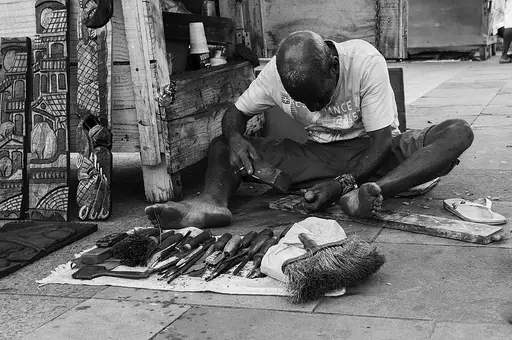
Sculpting sculptingCC0 · Wilfredor · source 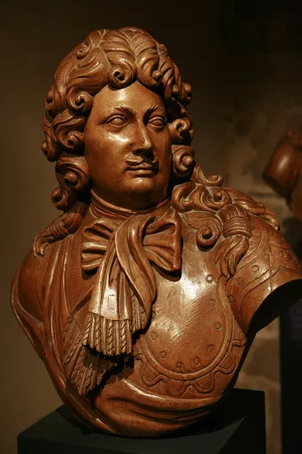
Sculptor sculptorCC BY-SA 2.0 fr · Rama · source 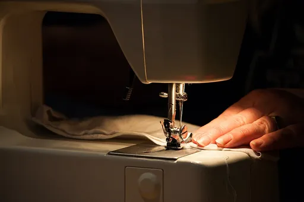
Sewing sewingCC BY-SA 4.0 · Tadeáš Bednarz · source 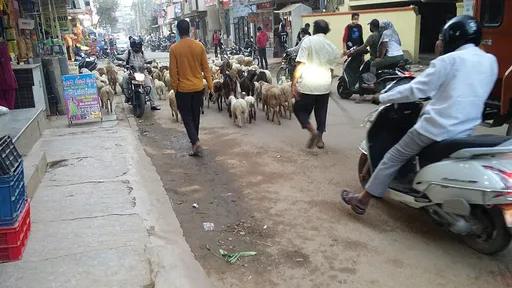
Shepherd shepherdCC BY-SA 4.0 · Mallikarjunasj · source 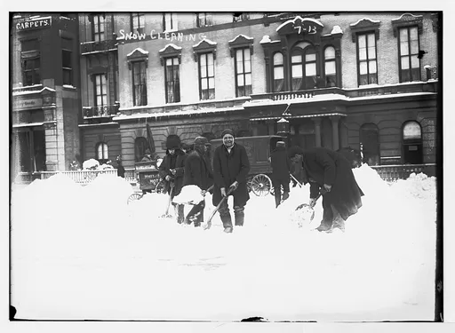
Shoveling snow shoveling-snowPublic domain · Bain News Service, publisher · source 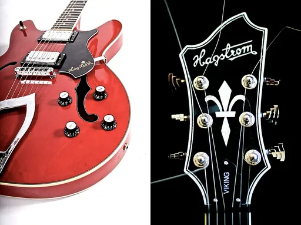
Singer singerCC BY 2.0 · THOR · source 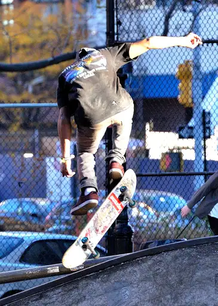
Skateboarding skateboardingCC BY 2.0 · Steven Pisano · source 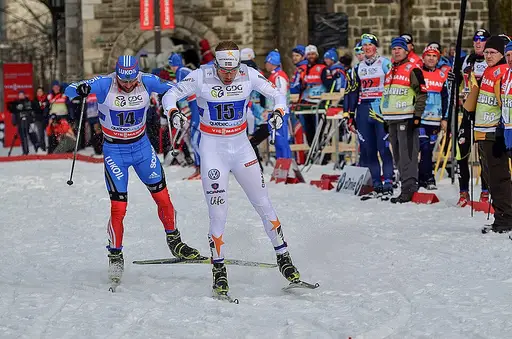
Skiing skiingCC BY 3.0 · Letartean · source 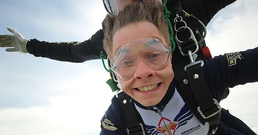
Skydiving skydivingCC BY-SA 4.0 · Raxoye · source 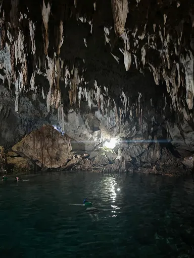
Snorkeling snorkelingCC0 · Deepak-nsk · source 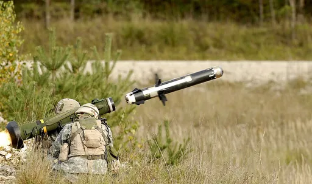
Soldier soldierPublic domain · GARY L. KIEFFER, USA, CIV · source 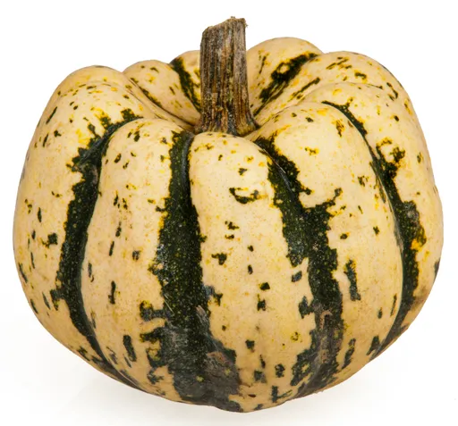
Squash squashCC0 · Evan-Amos · source 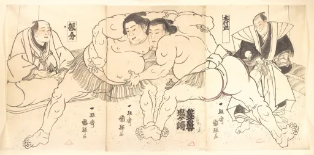
Sumo wrestling sumo-wrestlingCC0 · themet · source Surfing surfingCC BY-SA 4.0 · Dietmar Rabich · source 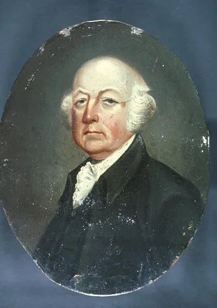
Surgeon surgeonPublic domain · British School · source 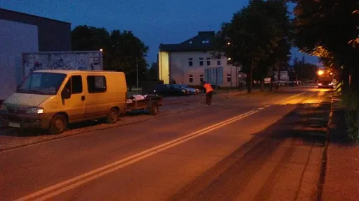
Sweeping sweepingPublic domain · Warszawska róg Szerokiej w Tomaszowie Mazowieckim, w województwie łódzkim, PL, EU. · source 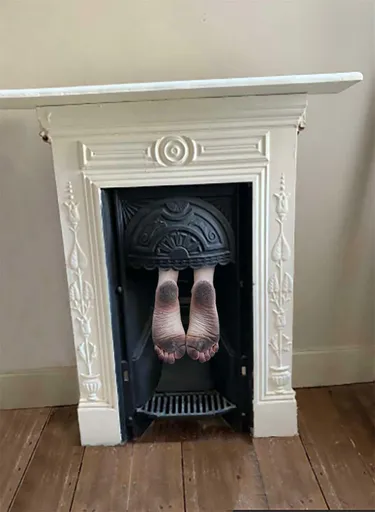
Sweeping a chimney sweeping-a-chimneyPublic Domain Mark · saudekjan · source 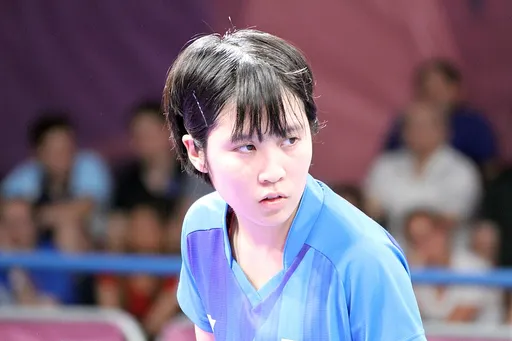
Table tennis table-tennisCC BY-SA 3.0 · Marcus Cyron · source 1 2 3 4 5 6 7 8 9 10 11